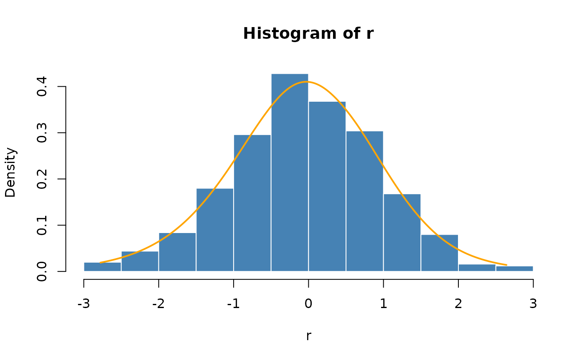

Estimates the parameters of a density function using smoothing
splines.
Arguments
- x
a numeric vector.
Value
for ssdFit, an object of class ssden. The returned
object can be used to evaluate density, probabilities and quantiles.
Author
Diethelm Wuertz, Chong Gu for the underlying gss package.
References
Gu, C. (2002),
Smoothing Spline ANOVA Models,
New York Springer–Verlag.
Gu, C. and Wang, J. (2003),
Penalized likelihood density estimation:
Direct cross-validation and scalable approximation,
Statistica Sinica, 13, 811–826.
Examples
## ssdFit -
set.seed(1953)
r = rnorm(500)
hist(r, breaks = "FD", probability = TRUE,
col = "steelblue", border = "white")
## ssdFit -
param = ssdFit(r)
## dssd -
u = seq(min(r), max(r), len = 301)
v = dssd(u, param)
lines(u, v, col = "orange", lwd = 2)
